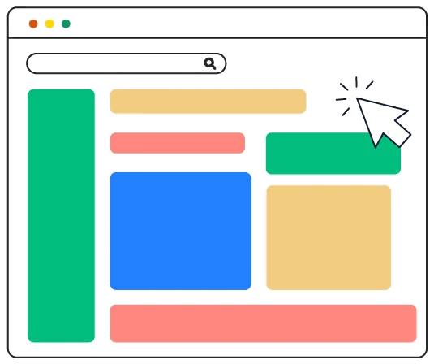

Google 搜尋
關鍵字廣告
客戶正在搜尋您的產品時，讓廣告出現在搜尋結果的上方或下方。我們撰寫客製化的廣告文案，並加上電話、地址、網站連結等額外資訊，讓客戶更容易點進來、更快成交。
示意圖的版位數量：Google 搜尋說明社群，「搜尋結果頁上方最多顯示 4 則廣告、下方最多 3 則」。support.google.com。2026 年 11 月查閱。
奧洛替您在 Google、YouTube、Yahoo、LINE、Facebook 與 Instagram 投放廣告，經營社群與 LINE 官方帳號，再用網站數據回頭調整投放。
依您的目標客群與預算選擇平台與版位，規劃、投放，再依成效調整。
Google 搜尋
客戶正在搜尋您的產品時，讓廣告出現在搜尋結果的上方或下方。我們撰寫客製化的廣告文案，並加上電話、地址、網站連結等額外資訊，讓客戶更容易點進來、更快成交。
示意圖的版位數量：Google 搜尋說明社群，「搜尋結果頁上方最多顯示 4 則廣告、下方最多 3 則」。support.google.com。2026 年 11 月查閱。

Google 多媒體廣告聯播網（GDN）
依網頁內容與受眾興趣，把您的圖片廣告投放到目標客戶常看的網站與 App 上，在客戶還沒開始搜尋前就先被看見。
YouTube
在使用者觀看 YouTube 影片時播放您的廣告，可以選擇「5 秒後可略過」或「不可略過」的格式，用影音快速觸及目標客群；使用者點擊廣告時，帶到最合適的網頁。
Yahoo
廣告以符合版面的樣式出現在新聞、網誌與入口網站的內容之間，手機與電腦都自然呈現，比橫幅廣告更容易被閱讀，適合增加品牌曝光。
LINE
LINE 在台灣有 2,200 萬月活躍用戶，滲透率九成以上。廣告出現在聊天列表、LINE TODAY 等客戶每天打開的版位，也可以和官方帳號搭配，讓看過廣告的人加入好友、持續經營。
月活躍用戶與滲透率：LINE Biz-Solutions〈4 大專案類型，在 LINE 生態圈拓展千百種行銷情境〉，2025 年 9 月。tw.linebiz.com。2026 年 11 月查閱。
在客戶常用的社群平台上推廣、互動，並留意大家怎麼談論您的品牌。
Facebook、Instagram
LINE
建置官方帳號並建立客戶分眾標籤，訊息只發給對的人，穩定留住既有客戶；也可以規劃集點卡、優惠券、互動遊戲等活動，開發新的潛在客戶。
Social listening
您的品牌、產品或服務在網路上被怎麼討論、在哪裡被討論？我們用社群監測工具與 AI 分析找出這些討論：正面的評論可以延伸成行銷素材，負面的聲量能及早發現、及早處理。
投放之後，用數據看哪些做法有效，再調整下一輪。
Google Analytics
了解網站流量從哪裡來、訪客做了什麼、去了哪裡，以及有沒有完成購買或填表。我們依分析結果提出網站優化與行銷策略建議，幫助您提高轉換、改善客戶體驗。
需要回放每一位訪客實際的操作過程，看出他在哪一步卡住？可以搭配奧洛代理的 HCL Discover。
FAQ
奧洛提供 Google 關鍵字廣告、GDN 聯播網、YouTube 影音廣告、Yahoo 原生廣告、LINE 廣告，以及 Facebook、Instagram 廣告的投放服務。
可以。奧洛協助建置 LINE 官方帳號並建立顧客分眾標籤，也可規劃集點卡、優惠券、互動遊戲等行銷活動，留住既有顧客並開發新客。
包含 Facebook、Instagram 的社群經營與貼文廣告，以及社群輿情監測：找出網友對品牌、產品或服務的討論內容與出現的地方。
以 Google Analytics 等網站分析工具，了解網站流量從哪裡來、使用者在網站上做了什麼、去了哪裡，以及是否完成購買或填表等轉換。
填寫網站上的諮詢表單或來電 02-5568-4688，說明產品、目標客群與預算，奧洛會回覆建議的投放與經營方式。